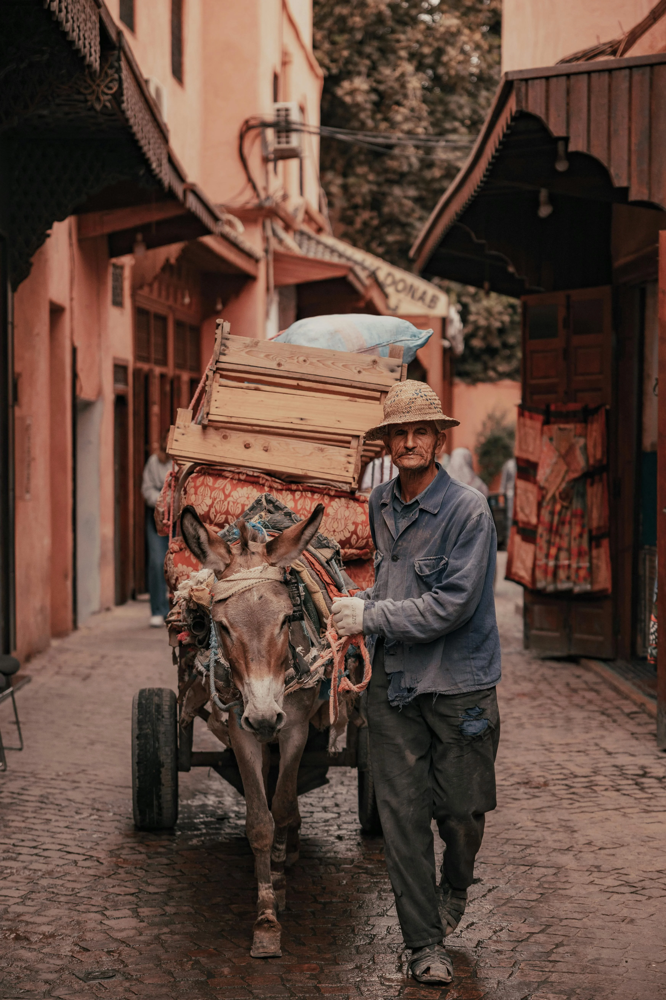
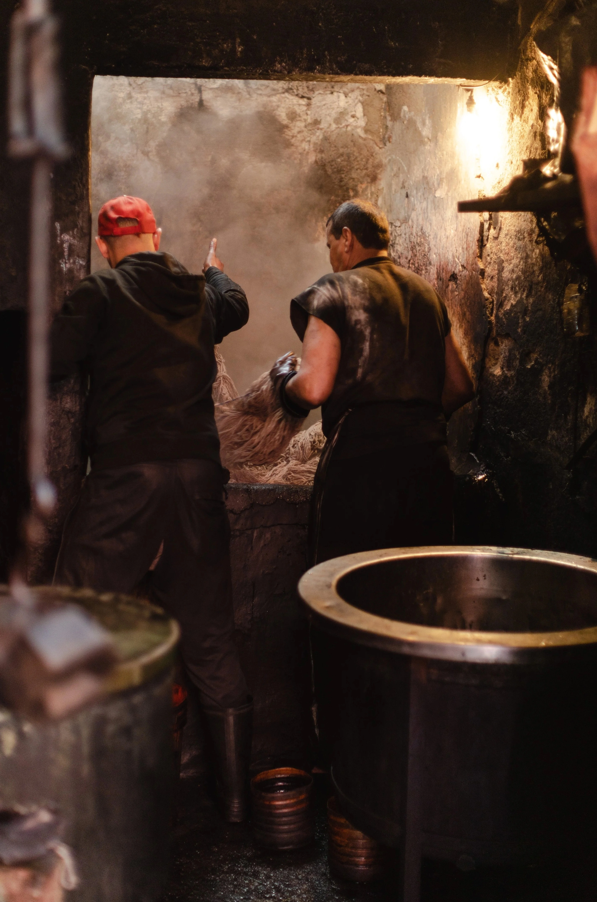

01 · Places
Architecture


02 · Discover
Attractions & landmarks

03 · Craftsmanship
Doors & details


04 · Local culture
Daily life



05 · Markets
Souks & crafts


06 · The people
People & artisans
